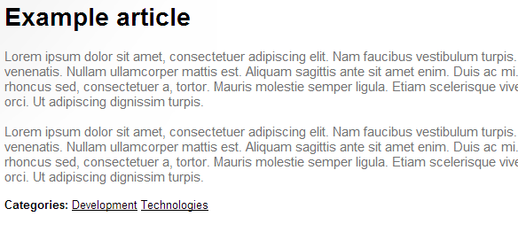

Example - Displaying categories in page lists
If you have pages that are organized in categories, you can display a list of categories that each page belongs to. You need to write a transformation method for displaying a list of categories assigned to a given page.
Displaying page categories using a custom transformation function
Open your web project in Visual Studio.
Note: If you have already extended the CMSTransformation partial class when defining other transformation methods, you can add the method for displaying categories there without creating a new class.
Create a new folder under the App_Code folder (or Old_App_Code on web application installations) and name it CustomTransformationMethods.
Right-click the folder and select Add -> Add new Item.
Create a new Class and name it CMSTransformation.cs.
Remove the default content of the class and enter the following code:
usingSystem;usingCMS.DocumentEngine;usingCMS.Taxonomy;usingCMS.Helpers;namespaceCMS.DocumentEngine.Web.UI{/// <summary>/// Extends the CMSTransformation partial class./// </summary>publicpartialclassCMSTransformation{publicstringGetDocumentCategories(intdocumentId,stringdocumentListAliasPath){if(documentId < 1){thrownewException("Invalid document ID");}// Uses the current page's alias path if one is not specified for the category list pageif(documentListAliasPath ==null){documentListAliasPath = DocumentContext.CurrentAliasPath;}// Initializes the HTML code resultstringresult ="";// Gets the categories of the specified pagevarcategories = DocumentCategoryInfoProvider.GetDocumentCategories(documentId).Columns("CMS_Category.CategoryID, CategoryDisplayName");foreach(CategoryInfo categoryincategories){// Constructs links for the assigned categories// The links lead to a page containing a list of pages that belong to the same category, with the category ID in the query stringintcategoryId = category.CategoryID;stringcategoryName = category.CategoryDisplayName;result +="<a href=\""+ URLHelper.ResolveUrl(DocumentURLProvider.GetUrl(documentListAliasPath));result +="?category="+ categoryId;result +="\">"+ categoryName +"</a> ";}returnresult;}}}Save the class. Build the project if it is installed as a web application.
Call the method in the code of your transformation.
Example<strong>Categories:</strong> <%# GetDocumentCategories(Eval<int>("DocumentID"), null) %>
The method takes the following arguments:
int DocumentID – the ID of the page whose categories you want to retrieve.
string DocumentListAliasPath – path of the page that contains the list of pages (filtered according to the category query string parameter). If you set the argument to null, the method uses the current page.
If you view the output of the transformation, you will see the categories to which the displayed page belongs.

Transformation display an article page with a list of associated categories